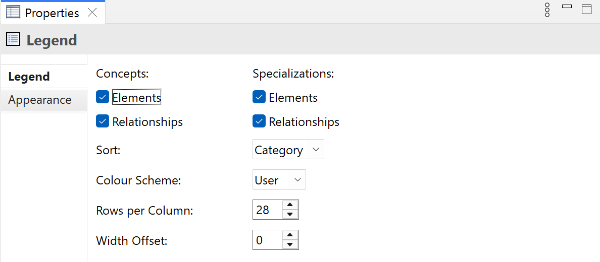

Selecting a Legend in a View means that you can edit or view the following properties in the Properties Window.
The Legend Tab
Properties for a Legend
| Concepts: | Select whether to display elements or relationships, or both. |
| Specializations: | Select whether to display specialized elements or relationships, or both. |
| Rows per Column: | How many rows are displayed per column. The default for new legends can be set in Preferences. |
| Width Offset: | Adjust the width of each column by an offset. This might be necessary when using certain fonts. |
| Use Colours: | Select whether to use colours for the legend's icons. These are the default user colours defined in Preferences. Note that these colours are stored in your local preferences and not saved in the model itself. |
Note that it is not possible to deselect all options of Concepts and Specializations because a blank legend is not very useful.
The Appearance Tab

Appearance Properties for a Legend
| Fill Colour: | Sets the fill colour. Click on the main part of the button to set the colour. The "Default" drop-down option sets the fill colour to the default setting as set in Preferences. |
| Gradient: | Sets the direction used to draw the gradient fill. Settings are "None", "Top", Left", "Right" and "Bottom". Note - gradients will not show when a diagram is exported in SVG image format. |
| Fill Opacity: | Set the fill opacity. Range from 0-255. |
| Line Colour: | Sets the colour of the line used to draw the object. Click on the main part of the button to set the colour. The "Derive from fill colour" drop-down option sets the line colour based on the fill colour. The "Default" drop-down option sets the line colour to the default colour as set in Preferences. If the "Default" drop-down option is not visible it is because line colours are derived from the element's fill colour, as set in the "Derive from fill colour" drop-down option. |
| Line Width: | Sets the width of the line used to draw the object. Options are "Normal", "Medium" and "Heavy". |
| Line Opacity: | Set the line opacity. Range from 0-255. |
| Line Style: | Set the line style. Options are "Solid", "Dashed", "Dotted" and "None". |
| Font: | Sets the font. Click on the main part of the button to set the font. The "Default" drop-down option sets the font to the default setting as set in Preferences. |
| Font Colour: | Sets the colour of the font. Click on the main part of the button to set the colour. The "Default" drop-down option sets the font colour to its default. |